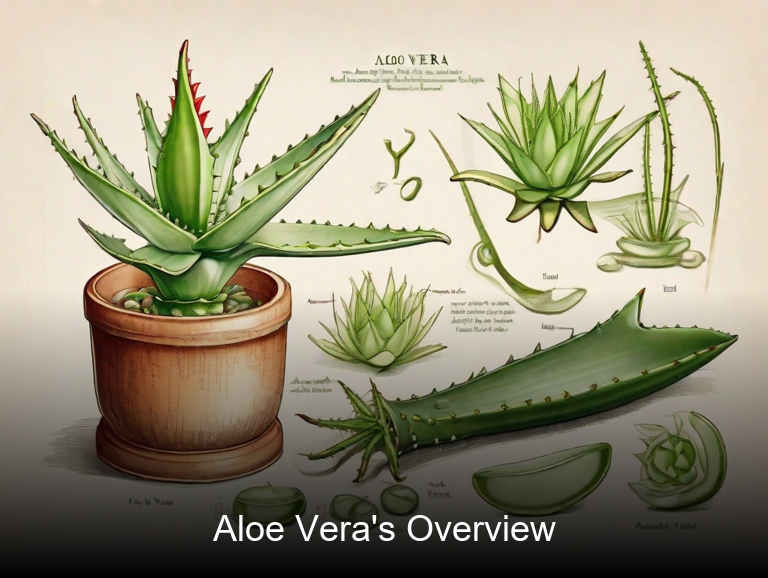
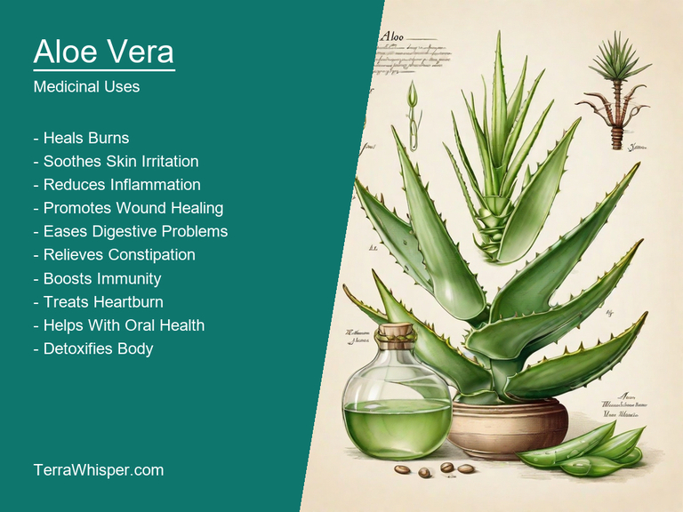
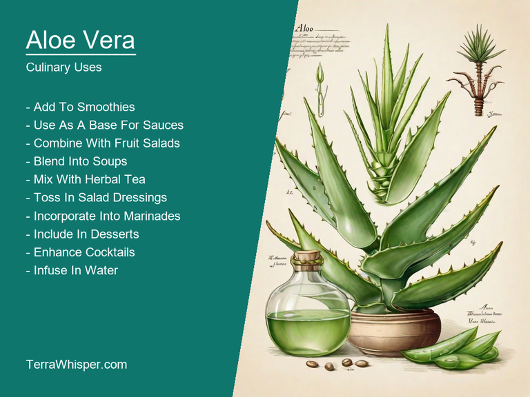
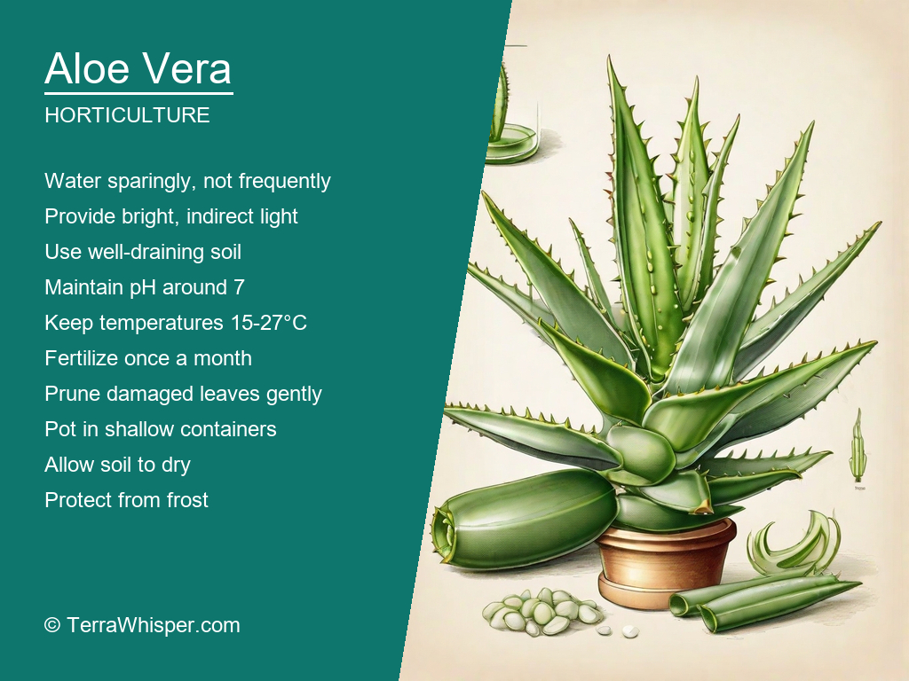
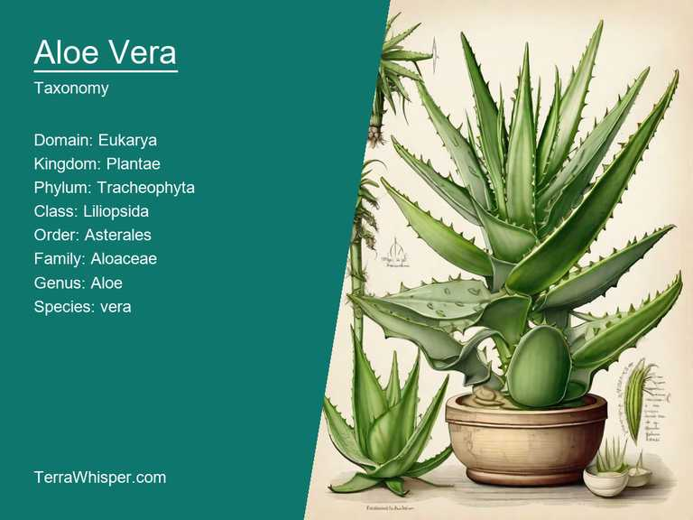
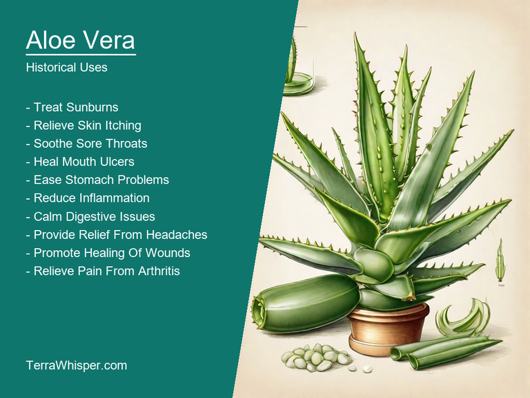

Aloe vera, scientifically known as Aloe vera, is a succulent plant species that belongs to the Liliaceae family. It is widely recognized for its medicinal and culinary aspects, which have been utilized since ancient times. A popular ingredient in natural skincare products, aloe vera gel can soothe sunburns and heal minor cuts and burns due to its anti-inflammatory properties. Additionally, it has been used as a laxative in traditional medicine to treat constipation and other digestive issues. In the culinary world, aloe vera leaves are sometimes consumed raw or cooked, providing nutrients like vitamins A, C, and E, as well as amino acids and minerals like calcium, magnesium, and zinc.
The horticultural and ornamental aspects of aloe vera make it an attractive addition to any garden or indoor space. With over 400 species, this versatile plant can be found in various shapes, sizes, and colors. Aloe vera thrives in well-drained soil and requires minimal watering, making it a low-maintenance choice for beginners and experienced gardeners alike. The unique appearance of its fleshy leaves and spiky edges adds visual interest to any landscape or planter arrangement. Furthermore, the plant's ability to tolerate both drought conditions and poor soil quality makes it an ideal candidate for xeriscaping or other water-wise gardening practices.
Dating back to ancient times, aloe vera has been used for various purposes beyond its medicinal and culinary applications. In Egypt, it was considered sacred and believed to possess healing powers; Pharaohs were even buried with aloe vera leaves to ensure their eternal youth. The Greeks and Romans also recognized the plant's therapeutic benefits, using it to treat skin conditions such as acne and eczema, and Romans are said to have used aloe vera as a remedy for hangovers. In Indian Ayurvedic medicine, aloe vera has been employed to promote digestive health and reduce inflammation. Today, aloe vera continues to be an essential ingredient in many skincare products due to its soothing properties and ability to stimulate collagen production.
In this article, you will discover what are the medicinal and culinary uses of aloe vera. Then, you'll learn how to cultivate it, what is its botanical profile, and how it was used historically.
Aloe vera (Aloe vera) has many health benefits, including its ability to heal wounds and soothe skin burns due to its anti-inflammatory properties. It can also help improve digestion by aiding in the absorption of nutrients from food. Additionally, it's effective as a laxative and may reduce symptoms of irritable bowel syndrome (IBS). Aloe vera is rich in vitamins, minerals, and antioxidants that contribute to its immune-boosting properties. It has also been shown to have anti-aging effects on the skin due to its capacity to stimulate collagen production and maintain hydration.
The following illustration lists the most important uses of aloe vera in medicine.

The medicinal benefits of Aloe vera are mainly attributed to its constituents, such as glycoproteins, polysaccharides, vitamins like vitamin C, E, B12, and minerals like calcium, copper, selenium, zinc, and magnesium. These components work together in the body to promote overall well-being and provide various therapeutic effects.
The most commonly used parts of Aloe vera for medicinal purposes are its inner gel (the pulpy portion found inside the leaf) and its outer rind (known as latex). The gel is typically applied topically or consumed in juice form, while the latex can be taken orally or directly extracted. The inner gel is used to treat burns, sunburns, and other skin irritations due to its soothing properties. In contrast, the outer rind contains a sticky substance known as aloin, which is often used for its laxative effects in treating constipation.
Although Aloe vera offers numerous health benefits, it's essential to be cautious when using it medicinally due to potential side effects such as allergic reactions, skin irritations, and digestive discomfort. In rare cases, some people may experience more severe complications from the plant's laxative properties, including electrolyte imbalance, abdominal pain, and dehydration. It is also worth noting that consuming raw Aloe vera leaves can lead to stomach ulcers or kidney problems if not used appropriately under expert guidance.
To minimize the risk of adverse side effects from Aloe vera use, it's crucial to consult a healthcare professional before incorporating it into any health regimen, particularly for individuals with existing medical conditions or those taking medications. Additionally, follow proper dosage recommendations and guidelines on its safe usage for different health concerns. By following these precautions, individuals can effectively utilize Aloe vera's healing properties while ensuring their overall well-being remains protected.
Aloe vera is not only used for its medicinal properties but also for its culinary uses. The gel-like substance extracted from the leaves of the aloe vera plant is commonly used in cooking, particularly in African and Mexican cuisine. It can be used as a thickening agent, a substitute for eggs or oil, and even as a meat tenderizer. Aloe vera gel is also used to make smoothies, juices, and desserts such as ice cream and sorbets. In addition to its versatility in cooking, aloe vera gel can also be used as a natural flavor enhancer for dishes that need an extra kick. Whether you're looking to add some zest to your meals or just want to try something new, aloe vera is a great ingredient to experiment with in the kitchen.
The following illustration lists the most common uses of aloe vera for culinary purposes.

The flavor of aloe vera gel is mild and slightly sweet, making it a versatile addition to a wide range of dishes. It has a smooth, creamy texture that can be used as a substitute for eggs or oil in many recipes. The taste of aloe vera gel is subtle enough that it doesn't overpower other flavors, but it adds a nice depth and complexity to dishes. Some people describe the flavor as being similar to that of bananas or vanilla, while others say it has a slightly nutty or coconut-like taste. Whatever you think it tastes like, aloe vera gel is sure to add some unique and delicious flavors to your meals.
When it comes to culinary uses, there are several parts of the aloe vera plant that can be used for cooking. The most commonly used part is the leaves, which contain a gel-like substance that is used as a thickening agent or a substitute for eggs or oil. In some cultures, the juice of the aloe vera plant is also used in cooking, particularly in beverages and desserts. In addition to the leaves and juice, other parts of the aloe vera plant can also be used for culinary purposes, such as the stems and flowers. However, these parts are not commonly used in cooking.
When using aloe vera gel in cooking, there are a few tips that can help ensure the best results. First, it's important to use fresh aloe vera leaves when making the gel. Old or dried leaves may have a bitter taste and won't produce as much gel as fresh leaves. To make the gel, simply mash the leaves with a fork until they release their juice. Then strain the juice through a fine-mesh sieve to remove any solids or fibers. Finally, store the gel in an airtight container in the refrigerator for up to a week. When ready to use, simply scoop out the desired amount and add it to your recipe as needed.
In terms of safety, aloe vera is generally considered safe to eat in small amounts. The gel-like substance extracted from the leaves of the aloe vera plant is non-toxic and can be used in cooking without any ill effects. However, like any ingredient, it's important to use aloe vera gel in moderation and not rely on it as a sole source of nutrition. In addition, some people may be allergic to aloe vera, so it's always best to do a patch test before using it in cooking.
Aloe vera is a succulent that can be grown easily in pots or directly in the ground. To grow aloe vera, choose a location with plenty of sunlight and well-draining soil. Make sure to water the plant regularly during dry spells, but avoid overwatering. Aloe vera prefers warmer temperatures between 50 and 90 degrees Fahrenheit. It can tolerate cooler temperatures at night or in winter, but should be kept away from cold drafts.
The following illustration lists the most important tips to cutlitvate aloe vera.

The ideal growing conditions for aloe vera include a lot of sun exposure. These plants thrive in bright, direct sunlight. In general, they do best in areas with plenty of natural light, but they can also be grown under artificial grow lights if necessary. Aloe vera plants require well-draining soil to prevent root rot. If you notice that the soil is waterlogged, you may need to add more gravel or other drainage materials to improve the soil's drainage.
Maintaining aloe vera is relatively easy. Once established, these plants are drought-tolerant and can go long periods of time without watering. However, they still require occasional watering during dry spells. In addition, be sure to remove any dead leaves or debris from the plant's surface to prevent pest infestations. Regularly pruning the plant will also help it grow healthy and strong. Aloe vera plants can be cut back by about a third each year in spring or early summer, leaving enough growth to allow for new leaves to form.
Aloe vera is a member of the Plantae domain, Kingdom Plantae, Phylum Tracheophyta, Class Magnoliopsida, Order Laminales, Family Aloaceae, Genus Aloe, and Species vera. The common names for Aloe vera include aloe, aloe plant, succulent, aloe barbadensis, and African aloe.
The following illustration display the botanical profile of aloe vera.

Aloe vera is a succulent plant with thick, fleshy leaves that are arranged in rosettes. The leaves are lance-shaped and have small spines along their edges. Aloe vera grows to a height of 1-2 feet and can spread over an area of 3-4 feet. It has large flowers that are red or pink with white centers, which bloom on spikes that rise above the foliage.
There are several variants of Aloe vera, including Aloe vera var. alba (white aloe), Aloe vera var. aurita (pink aloe), and Aloe vera var. buchii (buchii aloe). These variants differ in their leaf color and shape. White aloe has white leaves with pinkish tips, while pink aloe has pink leaves with a slightly curved shape. Buchii aloe has long, thin leaves that resemble those of agave plants.
Aloe vera is native to Africa and is found in a variety of habitats, including grasslands, savannas, and deserts. It prefers well-drained soil and full sun exposure. Aloe vera is also commonly grown as an ornamental plant in gardens and landscapes due to its attractive foliage and easy care requirements.
Aloe vera has a simple life cycle that includes vegetative growth, flowering, and seed production. Vegetative growth occurs when the plant produces new leaves and stems from its base. Flowering occurs on spikes that rise above the foliage, and the plant produces seeds that are dispersed by wind or animals. Aloe vera is a perennial plant, meaning it can live for several years and produce new growth each year.
Traditional medicine has long recognized aloe vera for its healing properties. The plant was used by ancient Egyptians to treat a variety of ailments, including digestive problems, skin conditions, and even wounds. In traditional African medicine, aloe vera is believed to have anti-inflammatory and pain-relieving effects, making it a popular remedy for arthritis and other joint disorders. Today, aloe vera is still used in alternative medicine as a natural remedy for digestive issues, such as irritable bowel syndrome, and as a topical treatment for psoriasis and other skin conditions.
The following illustration lists the most well known historical uses of aloe vera.

In divination practices, the plant is used to seek guidance from the gods. The leaves are burned to create smoke, which is then inhaled or used in offerings to the deities. In some cultures, aloe vera is also believed to have spiritual healing properties and is used in rituals to cleanse the soul of negative energy.
Legend has it that aloe vera was created by the gods themselves. According to one story, the goddess Nut saw the sun setting on the horizon and wept tears of gold, which fell to earth and created the plant. Another legend tells of a great flood that destroyed the earth, and only the aloe vera plant survived, providing hope and healing to all who discovered it. In some cultures, the plant is also believed to be inhabited by spirits or other supernatural beings, and is treated with great reverence and respect.